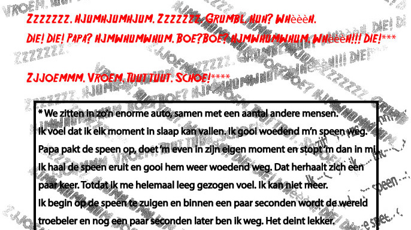

Zoon
Vroem. Tuut tuut. Whèèèh!! Die! Die! Whèèèh! Die! Die! Hjumhjumhjum. Zzzzzzzzzz.Zzzzzzz.**Zzzzzzz. Hjumhjumhjum. Zzzzzzz. Grumbl. Huh? Whèèèh. Die! Die! Papa? Hjmwhumwhum. Boe?Boe? Hjmwhumwhum. Whèèèh!!! Die!***Zjjoemmm. Vroem. Tuut tuut. Schoe!****[…]
Lees meer